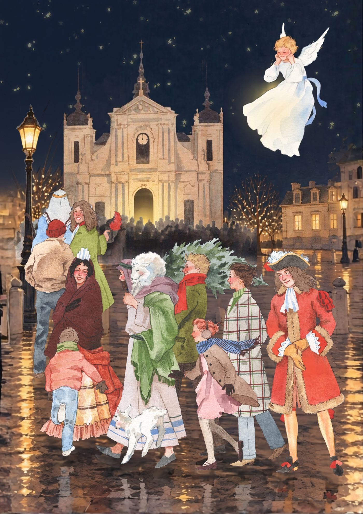
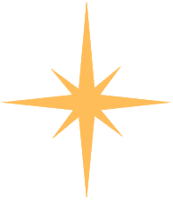
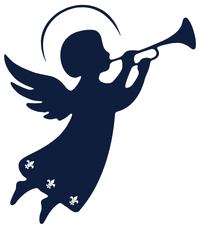
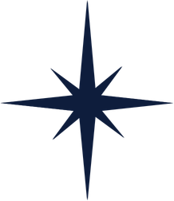
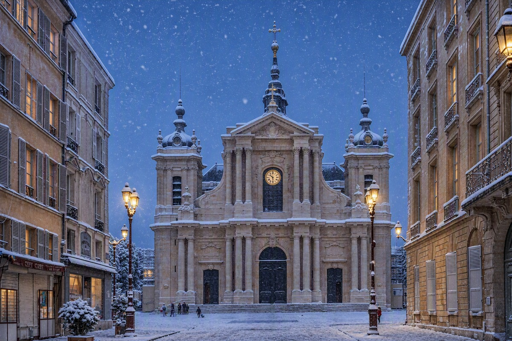
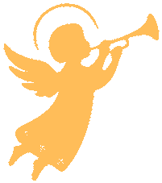

Spectacle & Crèche vivante — la Nativité en plein air
✦ Le projet
Au cœur de l'hiver, Michaëlo fait revivre le récit le plus ancien de Noël : celui de la Nativité. Un spectacle en plein air, gratuit et accessible à tous, où se déploient mise en scène, musique, lumière et crèche vivante — pour donner à voir, une fois encore, la naissance de l'Enfant-Roi.
Portée par de jeunes Versaillais bénévoles, l'association Michaëlo est une association loi 1901 d'intérêt général, indépendante, soutenue par la Ville de Versailles. Elle souhaite offrir à la ville une soirée de Noël unique : celle où l'on se retrouve, ensemble, autour de la crèche, pour se rappeler ce que la nuit de Bethléem a d'universel — la venue d'une lumière au milieu de l'obscurité. En savoir plus sur l'association.
Car la crèche vivante n'est pas qu'un tableau : c'est toute une communauté qui se rassemble pour raconter, à hauteur d'hommes, la naissance du Christ. Bergers, rois mages, Marie et Joseph, l'étable et l'étoile — chacun y trouve sa place, croyant ou simple curieux, petit ou grand, dans la même veillée de Noël.

Réunir petits et grands autour de la crèche, dans un même élan de fraternité et de joie partagée.
Faire du parvis de la cathédrale Saint-Louis l'écrin d'une crèche vivante, entre pierre et ciel.

Donner à voir la naissance du Christ, dans un spectacle vivant, gratuit et ouvert à tous.
Offrir à Versailles une veillée de Noël chaleureuse, conviviale et lumineuse.

✦ Programme
Un parcours simple et lumineux, de l'ouverture du parvis à la crèche vivante, pour vivre ensemble la nuit de la Nativité.
Accueil du public et premières animations musicales sur le parvis de la cathédrale.
Le spectacle et la crèche vivante rejouent la naissance du Christ sur le parvis de la Cathédrale Saint-Louis. Durée : 1 heure.
Temps fortConcerts en plein air, stands de créateurs versaillais et buvette & restauration traditionnelle faite maison.
Fermeture progressive du site. Merci à tous d'avoir fait vivre cette première édition.
✦ Le lieu
Construit entre 1743 et 1754, au cœur du quartier Saint-Louis, le parvis de la cathédrale Saint-Louis est l'un des espaces publics les plus chargés d'histoire et d'émotion de Versailles.
Un écrin architectural exceptionnel — solennel et chaleureux à la fois — qui offrira à la crèche vivante une profondeur et une beauté incomparables, entre pierre séculaire et ciel de Noël.
Gares de Versailles — distance à pied
✦ Rejoindre l'aventure
Michaëlo est avant tout une aventure humaine. L'organisation recherche des bénévoles, des créateurs et des partenaires pour préparer la première édition.

Accueil, logistique, costumes, sécurité, figuration dans la crèche vivante — chaque main compte pour faire vivre la soirée.
Remplir le formulaire →Stands, savoir-faire et artisanat exclusivement versaillais pour le marché de Noël, après le spectacle.
Proposer un stand →Soutien matériel, financier ou communication pour garantir la qualité et la gratuité de l'événement. Association d'intérêt général : votre don ouvre droit à une réduction d'impôt de 66 %.
Faire un don →Une autre question ? Écrivez-nous directement à association@asso-michaelo.com
Une crèche vivante est une représentation de la Nativité jouée par des personnes en chair et en os — Marie, Joseph, les bergers et les rois mages — pour donner à voir la naissance de Jésus. À Versailles, Michaëlo en propose une version en plein air, mêlée de spectacle, de musique et de lumière, sur le parvis de la cathédrale Saint-Louis.
Le spectacle et la crèche vivante ont lieu le samedi 12 décembre 2026, à partir de 16h30, sur le parvis de la cathédrale Saint-Louis de Versailles. La représentation débute à 17h00.
Oui. L'entrée est libre et gratuite, ouverte à tous les publics — croyants ou simples curieux, petits et grands.
« Un Noël à Versailles » est une sortie de Noël gratuite et familiale : une crèche vivante, un spectacle de la Nativité, des concerts en plein air et des stands de créateurs versaillais, sur le parvis de la cathédrale Saint-Louis.
Le parvis de la cathédrale Saint-Louis se situe place Saint-Louis, 78000 Versailles. Il est accessible à pied depuis les gares Versailles Château Rive Gauche (environ 5 min), Versailles-Chantiers (environ 15 min) et Versailles Rive Droite (environ 20 min). En voiture, vous pourrez vous garer dans les rues adjacentes ou au parking de la cathédrale.
Oui. Le parvis de la cathédrale est accessible aux personnes à mobilité réduite et aux poussettes.
Oui. La carte bancaire et les espèces sont acceptées sur place.
Michaëlo recherche des bénévoles, des figurants et des créateurs pour préparer cette première édition. Vous pouvez rejoindre l'aventure via le formulaire de participation ou écrire directement à l'association.
Oui. Michaëlo est une association d'intérêt général : un don ouvre droit à une réduction d'impôt de 66 % pour les particuliers et de 60 % pour les entreprises. Un don de 50 € revient ainsi à 17 € après réduction. Vous pouvez faire un don en ligne.